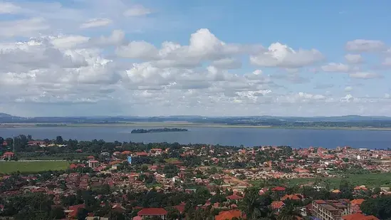

Country Data
- Country
- Republic of Uganda
- Capital
- Kampala
- Population
- About 45.9 million
- Area
- 241,038 km²
- Languages
- English, Swahili, and Luganda
- Currency
- Ugandan shilling (UGX)
- Time zone
- East Africa Time (UTC+3)
- Known for
- Lake Victoria and rich cultural heritage
Weather
- Conditions
- Partly cloudy
- Temperature
- 25 °C
- Wind speed
- 8 km/h
- Wind chill
- N/A